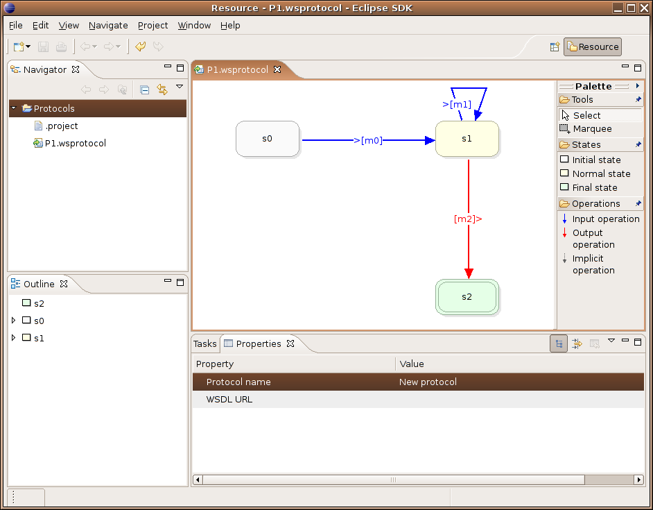

User interface overview

The user interface elements that are used when editing web services business protocols are
the following:
- the graphical editor, based on the Eclipse Graphical Editing Framework (GEF)
- a palette, attached to the editor, which allows for the creation of new elements and
the selection of existing ones
- an outline view, showing states and their outgoing messages
- a properties view, adapted to the context of the current selection and that allows to
change the properties of the selected elements (ex: names).